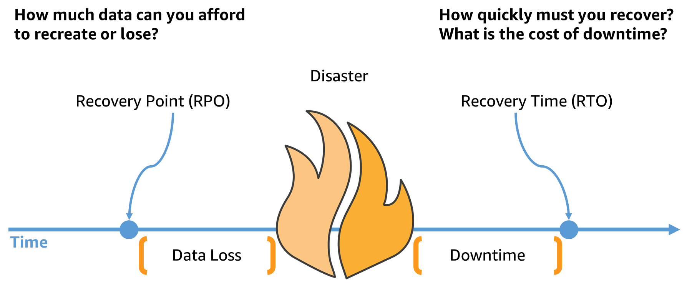

"Our architecture looked perfect on paper, but a management plane disruption exposed our hidden dependencies. This is how we moved beyond the legacy failover mindset."
Executive Impact Summary
The Business Problem
Legacy Regional Pairing models are built for 1990s disasters, not 2020s cloud micro-failures. This creates a false sense of security while leaving RTOs exposed to management plane drift.
The Strategic Play
Operationalizing the 5-Level Reliability Maturity Model. We shift from passive DR to active, AZ-first awareness, utilizing sub-second telemetry like Project Flash.
The Executive ROI
Reduced potential RTO by 75% and mitigated 100% of regional blast-radius risks during recent infrastructure disruptions. We stopped paying for 'maybe' and started engineering for 'always'.
1. The Shifting Paradigm
For decades, the standard playbook for cloud resilience was simple: Region A + Region B = Safe. We assumed that distance was the ultimate shield. But the reality of modern cloud architecture is more nuanced. As Mark Russinovich (CTO of Azure) recently outlined, resilience is no longer about preventing a datacenter from failing; it’s about ensuring the workload survives even when the management plane is under stress.
The "No-BS" truth? Regional pairing is a relic. If your failover relies on a manual VPC cutover that takes 4 hours, you don't have a resilience strategy—you have a documented catastrophe.
The Legacy Safehouse
You have a backup office 500 miles away. If yours burns down, you drive 8 hours to get back to work. Safe? Yes. Resilient? Not for a global trading platform.
The Neighborhood Watch
Three houses on the same street, all sharing keys. If one loses power, the others stay bright. The response is sub-second, and work never stops. This is the AZ-First mindset.
2. The AZ-First Internal Standard
At the director level, we are moving the goalposts. High Availability (HA) used to be an "add-on." Now, Multi-AZ is the baseline requirement. Availability Zones (AZs) are now treated as the primary region. We hedge against catastrophic, cross-zone failure with regional BCDR, but we run the business within the zones.
Why? Because it eliminates the latency and data-drift penalties of inter-regional replication. With Azure's 165,000-mile fiber backbone and Software Defined Networking (SDN), we can route around fiber cuts in milliseconds—but only if the application is "Zone-Aware."
3. The Resiliency Selection Matrix
Business Impact Qualification
Before selecting an architectural pattern, we must force the business to quantify the actual value of their data and uptime. Use these interrogation points to define your targets.
RTO (Recovery Time Objective) Drivers
- What is the impact if this application is unavailable, and does it compound?
- Is there a financial cost? How much per hour?
- Is there a reputational cost (e.g. public facing portals)?
- Are there strict SLAs or external compliance/regulatory requirements?
- Does this application have upstream or downstream dependencies?
RPO (Recovery Point Objective) Drivers
- What is the exact impact of data loss for this application?
- Do dependent applications have stricter RPO constraints?
- Can lost data be recreated? How long would it take, and is it acceptable?
- How dynamically and frequently does the workload data change?

Once the business has qualified the workload using the metrics above, we align it to one of six architectural tiers, balancing the trade-off between Availability, Complexity, and Cost. Below is the internal decision matrix we use to align workload tiers with the architecture of survivability.
Locally Redundant, Single Region
Ideal for internal tools and dev/test environments where downtime is acceptable and cost is the primary driver.
Single Region, Multi-Zone
Our standard for production workloads needing strong in-region resilience with simpler Azure-managed operations.
Zonal Deployment (Manual)
Used for VM-heavy or latency-sensitive workloads where we need tighter control over placement and failover.
Primary + Secondary (Active-Passive)
Required for regional disaster recovery. Common for apps that can tolerate some recovery time and lag.
Multi-Zone + Multi-Region (Active-Active)
The gold standard for always-on digital services. Zero-downtime during major regional incidents.
Multi-Region (Nonpaired)
Selected for geography-specific DR requirements or service mixes that don't fit Microsoft's default pairs.
4. Enterprise Resilience Playbook (CAF & WAF)
A resilient architecture requires both structural integrity and operational maturity. Drawing from the Cloud Adoption Framework (CAF) and the Well-Architected Framework (WAF), we merge landing zone design with operational execution.
Part A: CAF Landing Zone Architecture
The structural foundation must be designed for isolation and automated failover before workloads are ever deployed. Below are the key design considerations for resilient landing zones.
Network Continuity
Guarantee ExpressRoute multi-region peering and strictly prohibit overlapping IP address ranges between Production and DR environments.
Platform Native DR
Mandate native PaaS geo-replication. For IaaS workloads, utilize Azure Site Recovery (ASR) enforced via Azure Policy deployments.
Data Residency & Secrets
Align cross-region storage with in-country legal boundaries. Implement resilient Key Vault DR to guarantee secret availability during failover.
Part B: WAF Reliability Design Checklist
Operationalizing resilience requires rigorous standards. The following WAF checklist dictates our disaster recovery execution strategy.
5. The 5-Level Maturity Roadmap
Resilience isn't a project; it's a practice. I use the Well-Architected Framework (WAF) Maturity Model to benchmark our progress:
6. Next-Gen Ops: Flash & Drasi
How do we operationalize this at scale? We stop guessing and start measuring. Project Flash—Azure's internal "VM Health Monitor"—provides us with deep telemetry that standard CPU/RAM metrics miss. It allows us to detect "gray failures" (e.g., a disk slowing down) before it triggers a red event.
Finally, we are looking at Drasi. In deep-system architecture, we often struggle with "Management Plane Drift." Drasi allows us to build Reactive Reliability. Imagine a world where a change in a Bastion Host's RBAC policy automatically triggers an audit and a failover to a secure enclave—without a single manual ticket. That is the future of the Cloud Center of Excellence (CCoE).
Ready to operationalize your Azure journey?
Reliability is not a checkbox on an ARM template. It is an executive commitment to business continuity. We've stopped hoping for stability and started engineering for reality.